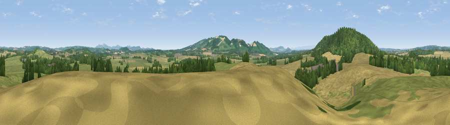

Viewpoint near Yarkhill
#19438 in England · top 49% of its area beats it · near Yarkhill · path 293 mWhere it is
The exact computed spot (SO 60825 43325). Click the marker for map links.
Public access: the nearest public right of way is about 293 m away — the final stretch may cross private land. Computed from Natural England's CRoW access layer and OpenStreetMap rights of way — not the legal definitive map. Always verify locally.
The view, rendered

A 360° render of this exact spot computed from the terrain model, tree cover and land cover — summer colours, afternoon light, calibrated against photographs of famous viewpoints. Real trees, hedges and buildings will differ in detail.
The panorama
Grey silhouette: terrain skyline in each direction (720 bearings, Earth curvature and refraction included). Dashed green: skyline with trees (+15 m) and buildings (+8 m) as obstacles. Blue strip: how far the ground is visible on each bearing.
Where the view opens
Wedge length = distance to the farthest visible ground on that bearing (vegetation-aware). Rings at 10, 25 and 50 km.
What fills the view
40% grassland · 35% cropland · 24% woodland · 1% built-up
Angular shares of the visible panorama (visual magnitude), not map area. Landscape diversity 0.50 (0–1 Shannon).
Key numbers
More beautiful places nearby
The staircase of upgrades: each row has a higher view potential than everything closer. Driving times are estimates from straight-line distance, calibrated against real road routing — check an actual route before setting out.
| Place | Direction | Drive | Score |
|---|---|---|---|
| Viewpoint near Yarkhill | NNE · 2 km | ~4 min | 53.6 |
| Viewpoint near Yarkhill | WNW · 2 km | ~5 min | 64.8 |
| Viewpoint near Yarkhill | W · 2 km | ~5 min | 71.4 |
| Viewpoint near Dormington | SSW · 4 km | ~10 min | 72.7 |
| Seagar Hill | S · 4 km | ~10 min | 82.1 |
| Herefordshire Beacon | ESE · 15 km | ~28 min | 85.8 |
| Millennium Hill | ESE · 16 km | ~28 min | 86.9 |
| Worcestershire Beacon | E · 16 km | ~28 min | 87.1 |
52.08688, -2.57315 · source: screening · position refined by local search. Computed location — check access rights before visiting.